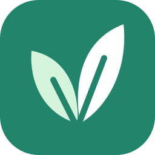

全部图文组合间距已统一为本对话确认版（2026-10-19）。点击右键可保存图片。
Windows 应用图标

仓库圆角双叶版
界面草叶 · 浅色
界面草叶 · 深色
侧栏 / 窄窗口登录 · 23 px · light
侧栏 / 窄窗口登录 · 23 px · dark
宽窗口登录 · 25 px · light
宽窗口登录 · 25 px · dark
关于页 · 28 px · light
关于页 · 28 px · dark
dark 图标 + 深色文字 · 已确认间距
原始素材和来源说明见 README.md。